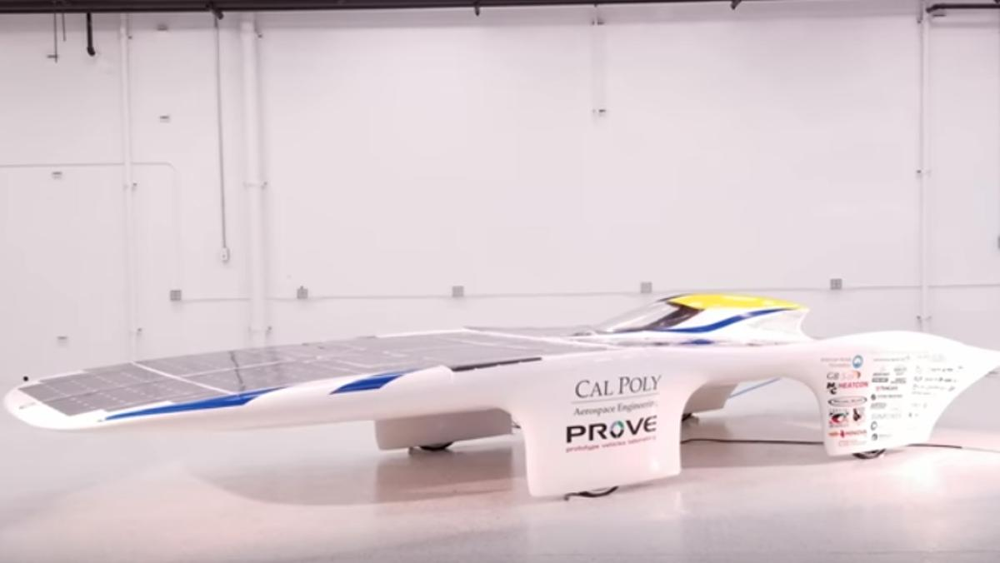

Prove Dawn: el coche solar que quiere romper el récord de velocidad
¿Harto de tus Bugatti y McLaren? Entonces, te molará el Prove Dawn, un coche solar para batir el récord de velocidad de este tipo de vehículos. Sus creadores, unos cerebritos del Laboratorio de Prototipos de Vehículos de la Universidad Estatal Politécnica de California, están convencidos de que el artefacto superará los 100 km/h. Si así fuera, pulverizarían la actual plusmarca situada en 90 km/h. Pero del dicho al hecho hay un buen trecho. Ya veremos de lo que es capaz.
La estética del Prove Dawn, que parece inspirada en una peli del espacio de serie B, no puede ser más sideral. Esto se debe a la búsqueda de la máxima eficiencia aerodinámica y a que la carrocería alberga 605 células solares que generan 2,5 kilovatios. Monta un motor eléctrico al que no se le escapa casi ningún rayo solar, puesto que aprovecha el 97% de la energía procedente del astro rey.
Construido íntegramente en fibra de carbono que se emplea en la industria aeroespacial, solo pesa 200 kilos, incluyendo al conductor. El Prove Dawn está equipado con cuatro ruedas de bicicleta que ofrecen una mínima resistencia al aire. Carece de volante, función que cumple un joystick, el cual, al menos en teoría, debería permitir variar la dirección del vehículo solar.
Una joven estudiante de ingeniería aeroespacial llamada Lacey Davis será la encargada de dirigir al Prove para tratar de batir el récord de velocidad. Hasta ahora las pruebas realizadas han arrojado unos resultados muy esperanzadores, registrando los 105 km/h. Pero solo durante su fase de ensayos y experimentación.
Si lacey quiere convertir al Prove Dawn en el coche solar más rápido, tendrá que recorrer una milla (1,6 km) durante una hora en las dos direcciones. El reto no es cualquier cosa. hasta la fecha solo tres coches solares han batido el récord en el último cuarto de siglo. Estaremos atentos para ver si lo consigue o no.
19 Abr 2018 19:23